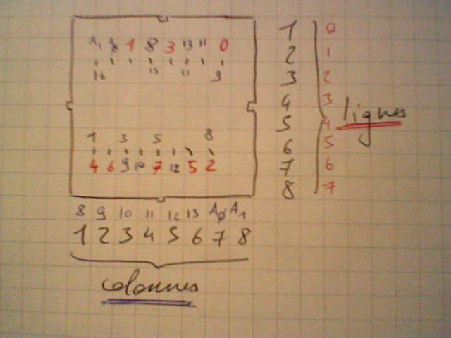
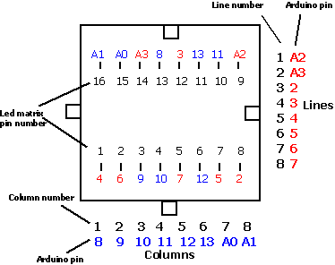

My implementation
Use that library
TimerOne that uses one uC internal timer to implement timed-event code execution. It is mainly based on the examples you can find here above (
http://www.arduino.cc/playground/Main/DirectDriveLEDMatrix) so credits go to them. I rewrote it in a different way that seems clearer to me. The "main thread" (loop) displays the data, and the "worker thread" modifies the data (shift it). ... most likely you in fact want to do the opposite (to keep the event code execution time under control and constant).
TimerOne.zip
The trick is to use
POV (persistance of vision) of vision. It makes the led blink very fast : slow enough for the eye to see it on, but fast enough for not seeing the blink.
That what I didn't understood at first, because for me it was impossible to have more than 1 point on without having collision and in fact seing multiple points on. Then I thought about this solution after a few tests ... and noticed that in fact it's the one everybody uses without saying it. As we say in french "ca va sans dire mais ca va mieux en le disant"...
/*
* _8x8 LED matrix
*
* original from (c) 2009 BlushingBoy.net
* Rewritten and changed by AlanFromJapan dec2009
*/
#include "TimerOne.h"
byte rows[8] = {
9, 14, 8, 12, 1, 7, 2, 5};
byte cols[8] = {
13, 3, 4, 10, 6, 11, 15, 16};
byte pins[16] = {
5, 4, 3, 2, 14, 15, 16, 17, 13, 12, 11, 10, 9, 8, 7, 6};
//screen is PER COLUMN (index), values are to be understood by lines
byte screen[8] = {
0, 0, 0, 0, 0, 0, 0, 0};
byte screenA[8] = {
B00000000,
B00011000,
B00100100,
B01000010,
B01000010,
B00100100,
B00011000,
B00000000
};
byte slideOffset = 0;
void setup() {
for(int i = 0; i < 8; i%20%20){
screen[i] = screenA[i];
}
Timer1.initialize(500000);
Timer1.attachInterrupt(slide);
Serial.begin(9600);
for (int i = 2; i <= 17; i%20%20)
pinMode(i, OUTPUT);
allOFF();
}
//TIMER CALLBACK
//slides the text in one direction
void slide(){
for (int col = 0 ; col < 8; col%20%20){
screen[col] = screen[col] << 1;
//fills new line with random data
//screen[col] = screen[col] | random(0,2);
//recopy the offset of the original pattern
screen[col] = screen[col] | (screenA[col] >> (7 - slideOffset)) ;
}
slideOffset = (slideOffset%201) % 8;
}
//TIMER CALLBACK
//turns one random pixel not the current value (on gets off, off gets on)
void oneOnOrOff(){
int vCol = random(0,8);
int vRow = random(0,8);
//^ is xor
screen[vCol] = screen[vCol] ^ (0x01 << vRow);
}
//Displays the current screen variable
//it uses retinian persistance (POV) for displaying
//not all the led can be on at the same time. so this program makes the led blink very fast,
//but slow enough for the eye to see it lightened however.
//led cant be one because we do cross and more than 2 points cause obviously 4 dots ligthened
void displayDotMatrix() {
for (int col = 0 ; col < 8; col%20%20){
for (int line = 0 ; line < 8; line%20%20){
if ((screen[col] >> line) & 0x01 > 0){
setOne(col, line, true);
//delay(1); //no delay, no flicker
setOne(col, line, false);
}
}
}
}
byte translatePin(byte original) {
return pins[original - 1];
}
void allOFF() {
for (int i = 0; i < 8; i%20%20){
digitalWrite(translatePin(cols[i]), HIGH);
digitalWrite(translatePin(rows[i]), LOW);
}
}
void on(byte row, byte column) {
screen[column] |= (B1<<row);
}
void off(byte row, byte column) {
screen[column] &= ~(B1<<row);
}
void setOne (int pCol, int pRow, boolean pOn){
digitalWrite(translatePin(cols[pCol]), (pOn ? LOW : HIGH));
digitalWrite(translatePin(rows[pRow]), (pOn ? HIGH : LOW));
}
// looping some LEDs routine
void loop() {
displayDotMatrix();
}
Other implementation - without timer
A scan of all the lines, not very fast and not using a timer... can do better for sure.
LedMatrixTest.pde

Led matrix vs. Arduino pins
Other version that works with WinAvr
LedMatrixCompanion.c
Don't foget to create in the avrdude.conf a clone of the m88 named m88p that has signature
signature = 0x1e 0x92 0x08; (see
http://www.avrfreaks.net/index.php?name=PNphpBB2&file=viewtopic&p=564029)
LedMatrixCompanion.c